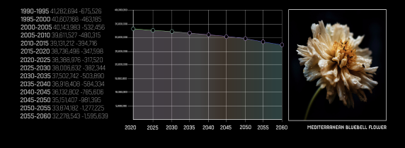
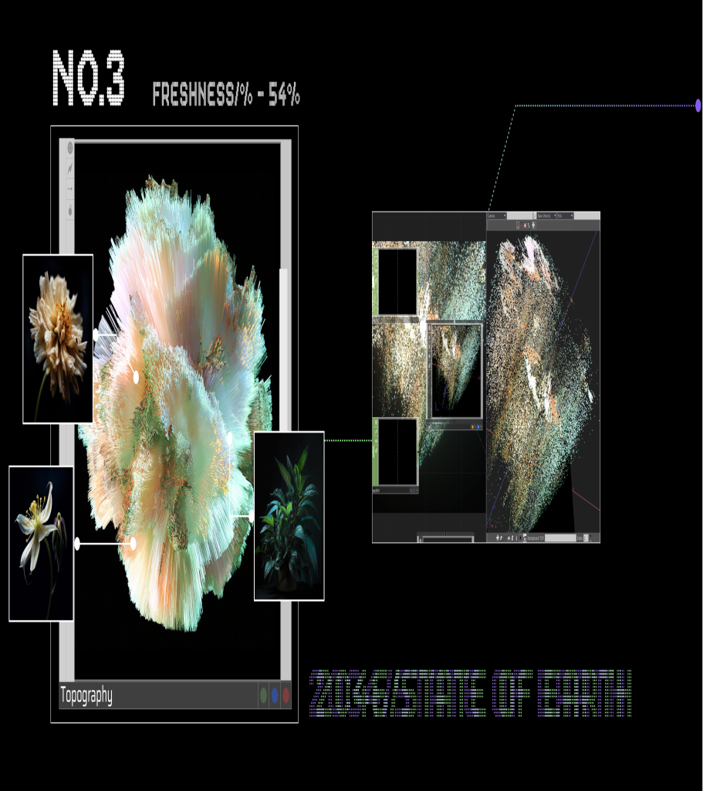
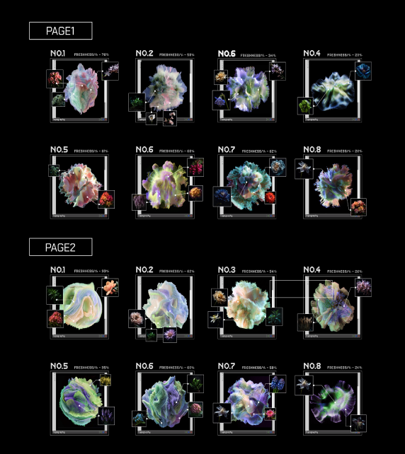
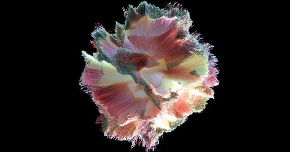
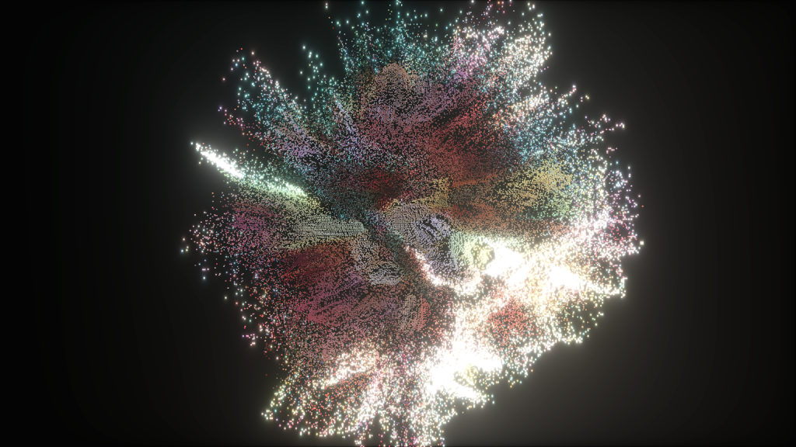

从生态信息到视觉语言
FROM ECOLOGICAL DATA TO VISUAL LANGUAGE
提取不同地区的植物信息，结合数据分析与情境推演，将生态变化转译为可观察的形态、密度和粒子状态。
Plant information from different regions is combined with data analysis and scenario exploration to translate ecological change into visible forms, densities and particle states.
16 种未来植物视觉情境
16 FUTURE PLANT VISUAL SCENARIOS
整合生成与分析结果，形成 16 种未来植物数据可视化情境，呈现不同生态状态下的视觉差异。
Generation and analysis are integrated into 16 future plant visualization scenarios, revealing visual differences between ecological states.
从完整形态到粒子碎裂
FROM INTACT FORM TO PARTICLE FRAGMENTATION
Leap Motion 追踪手掌移动与握拳状态。手掌运动影响图像位移，握拳触发粒子碎裂，隐喻人类活动对生态系统的影响。
Leap Motion tracks palm motion and fist gestures. Palm movement displaces the image, while making a fist triggers particle fragmentation, reflecting human impact on ecosystems.





05
2024
盖亚假说 GAIA HYPOTHESIS

叙事与视觉转译 NARRATIVE